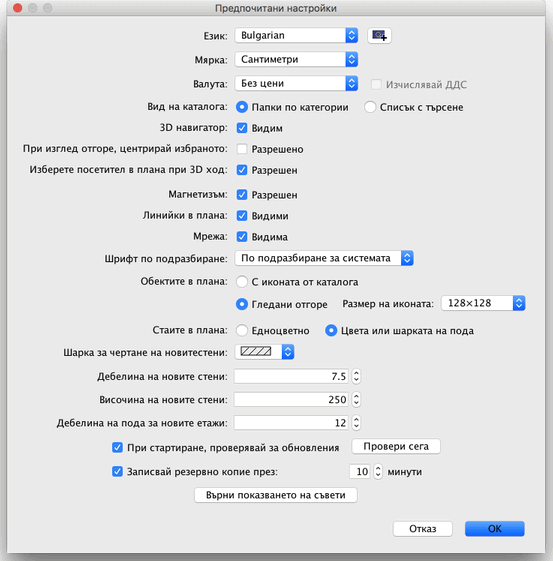
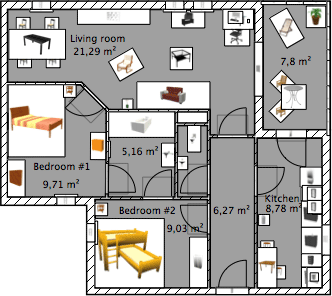

|
За да промените предпочитаните настройки на Sweet Home
3D, изберете Файл > Предпочитания... (Sweet
Home 3D > Предпочитания... за Mac OS X).

В менюто Предпочитания, можете да промените
ползвания Език в потребителския интерфейс
на Sweet Home 3D и Мярката, използвана в
размерите и площите.
Отметката Магнетизъм разрешава или
забранява магнетизма, използван за чертането
на стени, поставянето
на мебелировката и др.
Бутончетата Папки по категории и Списък с
търсене задават начина на изобразяване на каталога с мебели и
аксесоари в прозореца
на Sweet Home 3D.
Отметката 3D навигатор показва или скрива бутона
със стрелки, улесняващ навигирането
в 3D изгледа.
Отметката Линийки в плана показва или скрива
помощните линии отгоре и отляво на плана.
Отметката Мрежа показва или скрива помощната мрежа
в плана.
С радиобутоните С иконата от каталога и Гледани
отгоре можете да изберете как да се изобразяват обектите в
плана (вижте изображенията по-долу).
С радиобутоните Едноцветно и Цвета или
шарката на пода можете да изберете дали стаите да бъдат
показвани в плана запълнени с цвета или шарката, която сте поставили на
пода или в сиво (отпечатва се в бяло).
От падащия списък Вид на стените в плана можете да
изберете как да бъдат запълнени стените в плана.
От Дебелина на новите стени можете
да зададете дебелината на стените, създавани от този момент нататък.
От Височина на новите стени можете
да зададете височината на стените, създавани от този момент нататък.
Стойността в полето, свързано със записването на резервно копие
на плана с цел възстановяване, задава интервал в минути между записите.
Това са автоматично записани планове, които могат да се използват
за възстановяване при следващото стартиране на Sweet Home 3D, след
аварийно спиране на програмата.
И последно, бутонът Върни показването на съвети
прекратява забраната на отметките Не показвай това занапред
в съветите, показвани при избирането на някои инструменти. Това
означава, че всички съвети, на които сте маркирали тази отметка, отново
ще бъдат показвани.
|  |
|
 |
Показване
на плана по подразбиране с иконите от каталога,
едноцветен под и стени, запълнени с наклонени линии |
Показване
на плана с обекти гледани отгоре,
цвят на пода и стени, запълнени с черно |
|